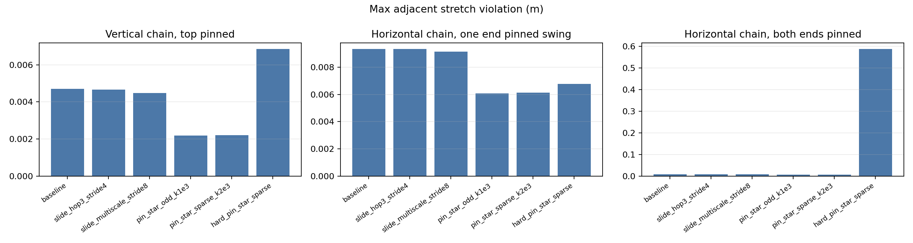
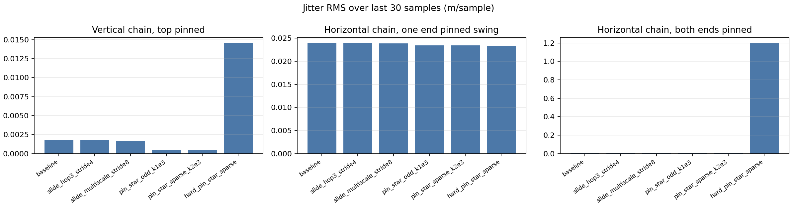
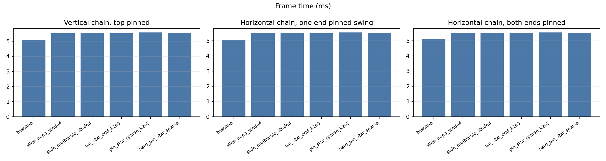

Experiment target: test whether tension-only long-range distance constraints reduce local VBD stretch/jitter enough to justify their extra cost.
The solver hook adds unilateral rigid body distance constraints. Each LRC pair is active only when the body-origin chord exceeds its rest chord plus slack, so bent cables do not receive compression. LRC pairs are validated against existing rigid body coloring; the tested odd hop distances preserve the alternating cable colors.



Selected LRC candidate: pin_star_odd_k1e3 (23 constraints). Lower quality score is better.
| Variant | LRC count | Max adj violation | Jitter | Quality | ms/frame | overhead vs baseline |
|---|---|---|---|---|---|---|
| baseline | 0 | 0.00470141 | 0.00181249 | 0.00515453 | 5.106 | +0.0% |
| slide_hop3_stride4 | 12 | 0.00465801 | 0.00179025 | 0.00510558 | 5.539 | +8.5% |
| slide_multiscale_stride8 | 17 | 0.00446966 | 0.00163643 | 0.00487877 | 5.547 | +8.6% |
| pin_star_odd_k1e3 | 23 | 0.00218657 | 0.000441185 | 0.00229686 | 5.533 | +8.4% |
| pin_star_sparse_k2e3 | 11 | 0.00220373 | 0.000482201 | 0.00232428 | 5.580 | +9.3% |
| hard_pin_star_sparse | 11 | 0.00684652 | 0.014582 | 0.010492 | 5.565 | +9.0% |
Selected LRC candidate: pin_star_odd_k1e3 (23 constraints). Lower quality score is better.
| Variant | LRC count | Max adj violation | Jitter | Quality | ms/frame | overhead vs baseline |
|---|---|---|---|---|---|---|
| baseline | 0 | 0.00932422 | 0.0239979 | 0.0153237 | 5.066 | +0.0% |
| slide_hop3_stride4 | 12 | 0.00933018 | 0.0239894 | 0.0153275 | 5.534 | +9.2% |
| slide_multiscale_stride8 | 17 | 0.00915454 | 0.0238363 | 0.0151136 | 5.534 | +9.2% |
| pin_star_odd_k1e3 | 23 | 0.00606612 | 0.0234488 | 0.0119283 | 5.492 | +8.4% |
| pin_star_sparse_k2e3 | 11 | 0.00613596 | 0.0234415 | 0.0119963 | 5.544 | +9.4% |
| hard_pin_star_sparse | 11 | 0.00676537 | 0.0233691 | 0.0126077 | 5.514 | +8.8% |
Selected LRC candidate: pin_star_odd_k1e3 (45 constraints). Lower quality score is better.
| Variant | LRC count | Max adj violation | Jitter | Quality | ms/frame | overhead vs baseline |
|---|---|---|---|---|---|---|
| baseline | 0 | 0.00781585 | 0.00942863 | 0.010173 | 5.117 | +0.0% |
| slide_hop3_stride4 | 12 | 0.00776723 | 0.00941898 | 0.010122 | 5.526 | +8.0% |
| slide_multiscale_stride8 | 17 | 0.00753438 | 0.00935466 | 0.00987305 | 5.515 | +7.8% |
| pin_star_odd_k1e3 | 45 | 0.00561506 | 0.00862082 | 0.00777026 | 5.509 | +7.7% |
| pin_star_sparse_k2e3 | 22 | 0.00573222 | 0.00862307 | 0.00788799 | 5.536 | +8.2% |
| hard_pin_star_sparse | 22 | 0.587388 | 1.20204 | 0.887897 | 5.525 | +8.0% |
metrics.jsonsummary.csvassets/*.mp4assets/plot_*.pngSoft unilateral LRC improves the measured cable behavior, and fusing LRC accumulation into solve_rigid_body removes most of the earlier overhead. The best-quality variant remains pin_star_odd_k1e3: quality improves by about 55% for the vertical one-pin case, 22% for the horizontal swing, and 24% for the two-pin case. With fused per-body LRC adjacency, its frame-time overhead is now about 8-9% instead of the earlier separate-kernel 37-50% range. Sliding hop LRC gives only small gains, while hard LRC remains less robust, especially in the two-pin case. The next step is to tune the sparse pin-star schedule and stiffness/slack rather than optimize kernel launches.